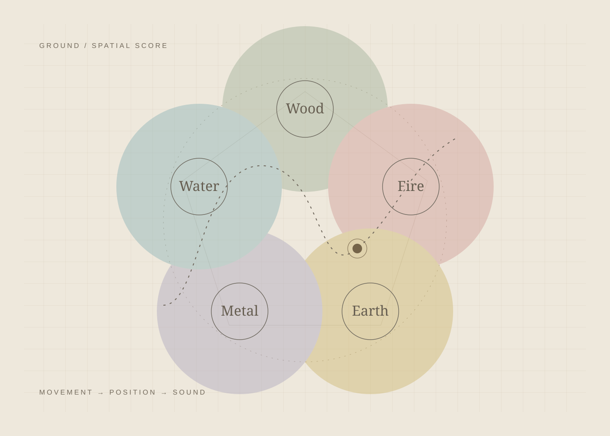
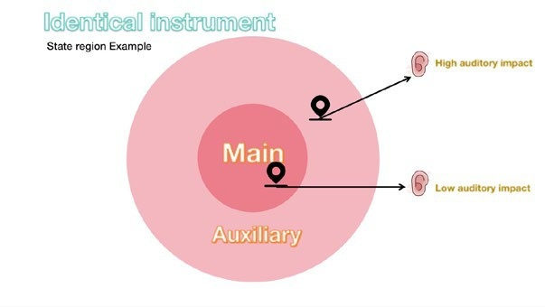
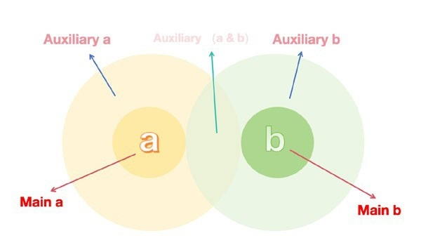
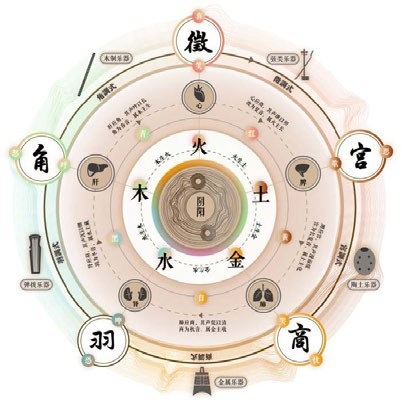
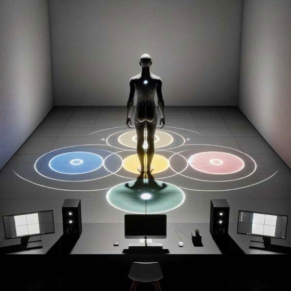
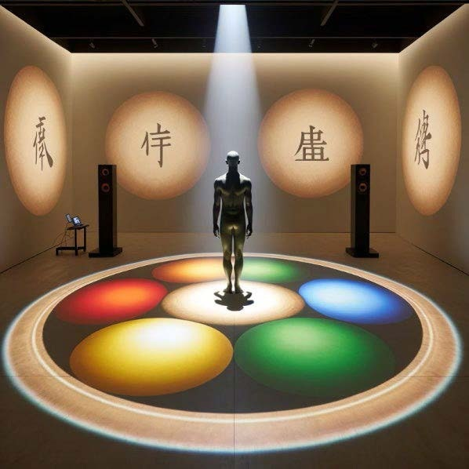
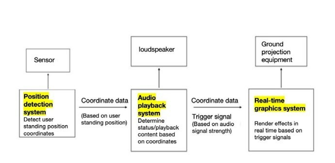
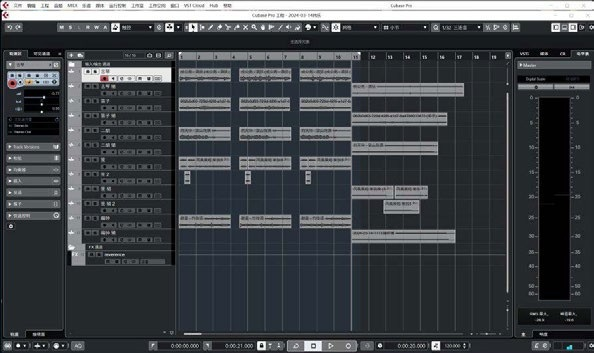

Spatial interaction · Musical interface
Ground
Compose with the space beneath your feet.

The idea
Ground explores a new musical interface inspired by the Chinese Five Elements and pentatonic music. Moving through a set of spatial zones changes the instruments and melodies a participant hears. The design supports both individual exploration and shared performance.
One space, multiple musical states
Each instrument has a defined main zone and a wider auxiliary zone. Main zones emphasize a clear instrumental identity; auxiliary zones use softer textures. Where regions overlap, sounds combine so movement changes the arrangement.
Continuity between interactions
The main state preserves the timing of a musical phrase, while auxiliary material fades in to bridge transitions. Volume, reverberation, density, and attack distinguish the states. Three main clips per instrument introduce variation without losing the instrument’s identity.
Audio prototype and spatial concept
The documented audio prototype uses Pure Data, with mouse mapping to test position-based behavior, and Cubase for preparing instrumental materials. The wider installation design proposes position tracking and projected graphics; the room images shown here are concept visualizations.
Implementation
Engineering & process
Full-frame project screenshots, code excerpts, and process documentation. Select any image to inspect it at its original size.















See & hear